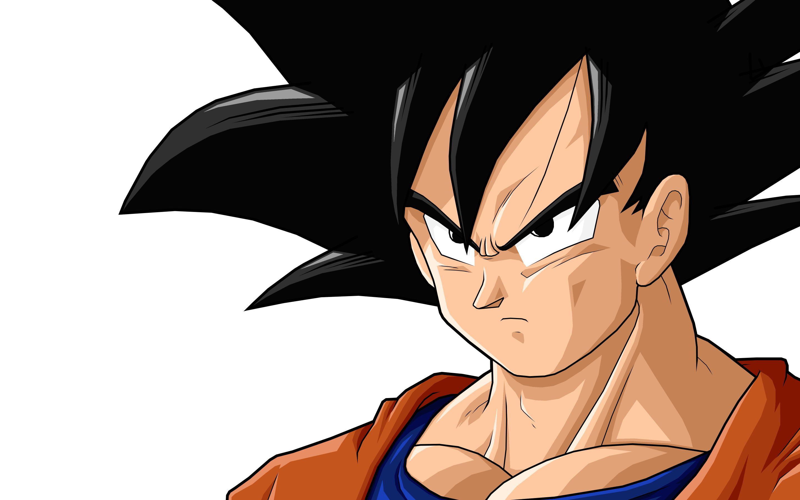
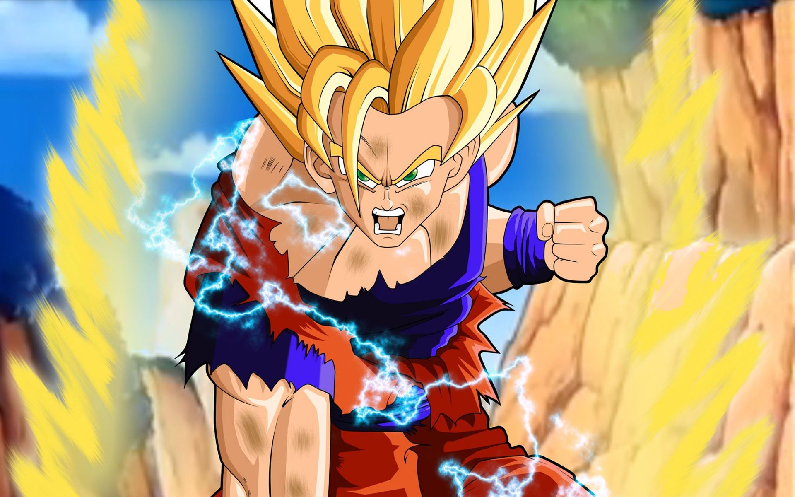
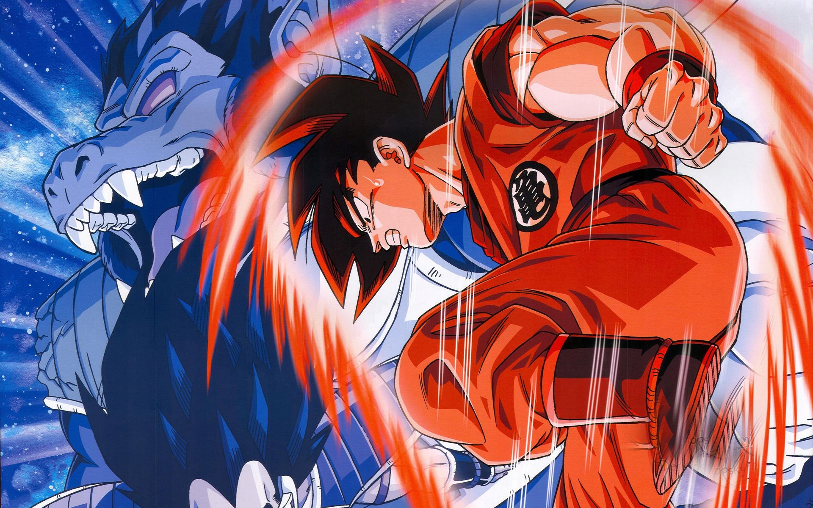

<!DOCTYPE html>
<html>

<head>
    <meta charset="utf-8" />
    <meta http-equiv="X-UA-Compatible" content="IE=edge">
    <title>No.6 - 利用 CSS animation 制作一个炫酷的 Slider</title>
    <meta name="viewport" content="width=device-width, initial-scale=1">
    <style>
        .wrap {
            z-index: -1;
            background-size: cover;
            position: absolute;
            top: 0;
            bottom: 0;
            width: 100%;
        }

        .container {
            background-size: cover;
            position: absolute;
            top: 0;
            bottom: 0;
            width: 100%;
        }

        .footer {
            position: fixed;
            bottom: 50px;
            text-align: center;
            width: 100%;
        }

        .footerImg {
            width: 180px;
            height: 100px;
            margin: 0 10px;
            filter: brightness(0.5);
            cursor: pointer;
        }
        .footerImg:hover {
            filter: brightness(1);
        }
        /* 特效 */

        @keyframes mymove {
            0% {
                left: -500px;
            }
            100% {
                left: 0px;
            }
        }

        @keyframes mymove2 {
            0% {
                top: 350px;
            }
            100% {
                top: 0px;
            }
        }

        @keyframes myscale {
            0% {
                transform: scale(0.1)
            }
            100% {
                transform: scale(1)
            }
        }

        @keyframes myscale2 {
            0% {
                transform: scale(2)
            }
            100% {
                transform: scale(1)
            }
        }

        @keyframes mix {
            0% {
                transform: scale(0.1) rotate(-360deg)
            }
            100% {
                transform: scale(1) rotate(0deg)
            }
        }

        .a1 {
            animation: mymove 0.5s ease-out;
        }

        .a2 {
            animation: mymove2 0.5s ease-out;
        }

        .a3 {
            animation: myscale 1s ease-in;
        }

        .a4 {
            animation: myscale2 1s ease-out;
        }

        .a5 {
            animation: mix 0.7s ease-in-out;
        }
    </style>
</head>

<body>
    <div class="wrap">
        <div class="container a1" style="background-image: url(../static/img/1.jpg);">
        </div>
        <div class="footer">
            
            
            
            
            
        </div>
    </div>
    <script>
        document.querySelector('.footer').addEventListener('mouseover', function (e) {
            if (e.target.tagName === 'IMG') {
                document.querySelector('.container').className = 'container ' + e.target.dataset.animation
                var currentImg = document.querySelector('.container').style.backgroundImage
                document.querySelector('.wrap').style.backgroundImage = currentImg
                document.querySelector('.container').style.backgroundImage = 'url(' + e.target.src + ')'
            } else {
                return
            }
        })
    </script>
</body>

</html>